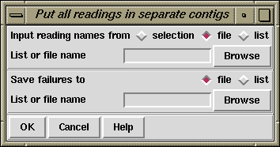

This algorithm simply loads the readings into the database without comparing them, each starting a new contig. This can be of use to those employing the database for storage rather than assembly.

Assembly usually works on sets of reading names and they can be read from either a "file" or a "list" and an appropriate browser is available to enable users to choose the name of the file or list. If just a single reading is to be assembled choose "single" and enter the filename instead of the file or list of filenames.
The routine writes the names of all the readings that are not entered to a "file" or a "list" and an appropriate browser is available to enable users to choose the name of the file or list.